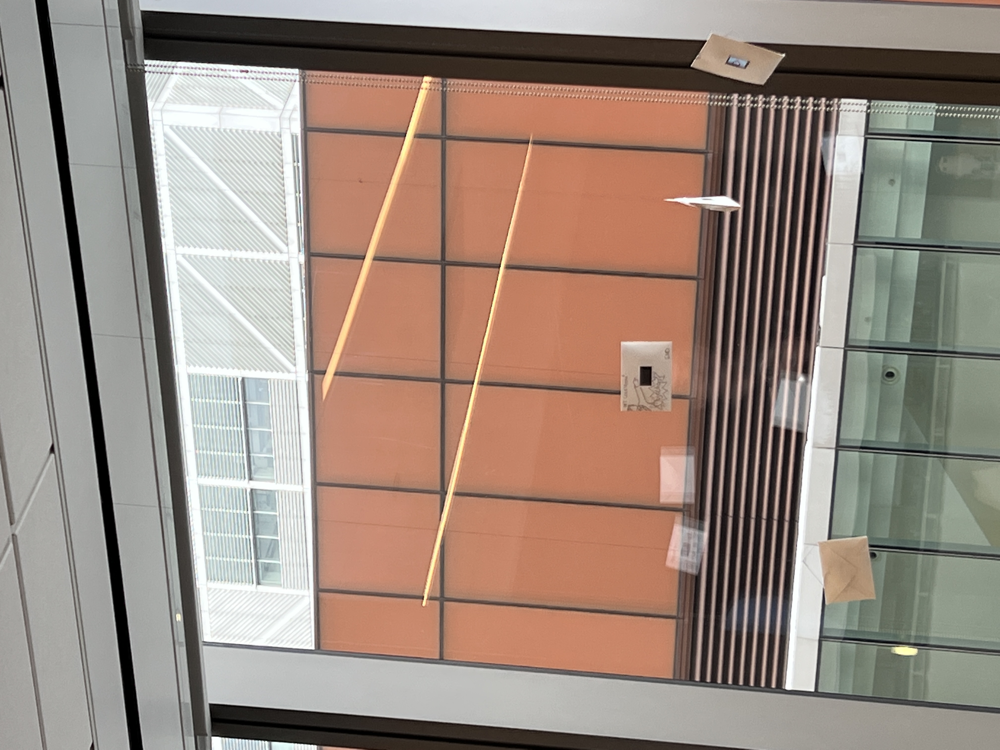

For my art installation, I decided to make a randomly generated script made out of stereotypical lawyer phrases. The concept behind this project came from my desire to incorporate film scripts into my display. I kept trying to think of pre-existing scripts to use, but I couldn’t settle on any specific one. Ultimately, I decided to craft my own. The idea changed a lot over the time I was working on it. Originally it was a predetermined script that included a third “Judge” character, but that changed to being part pre-determined and part randomized before I finally landed on it being fully randomized. I landed on an entirely randomized script because I felt it was more interesting if each script was truly brand new. It felt like each iteration of the display was the creation of a new climax of a courtroom drama that one could see in an actual story. I also felt the design was just very fun because at times it is very nonsensical, but these phrases are so well known that you still understand what the project is referencing.
For this art installation, I used an ESP32 TTGO T-Display. To set up the ESP32 and the final display I used the following materials:
The ESP32 was configured using the following steps:
The Final Display was made using the following steps:
The final display can then be hung wherever you would like for it to be displayed. In our installation, we hung the ESP32s by placing the popsicle stick between two vents in the ceiling. Display for however long you would like or until the battery runs out.
My decision to settle on a courtroom setting came from some of my early experimentation with the ESP32 where I tried to get the iconic “Objection!” gif from Ace Attorney to play on my device.
The different methods I tried either didn’t work or did not create a gif that blended well with the background color that I wanted to use. I finally decided to focus specifically on images instead of gifs because I knew of a process for images that worked well and having images over gifs didn’t hinder my project. The method I used for adding images followed these steps:
I then used another header file to store an array of all the possible dialogue choices each lawyer had. These phrases included “Objection!”, “My client is innocent!”, “My opponent has no evidence!”, and more. To have these phrases be randomly selected, I used the random() function to choose a random index within the array. This index was then compared to the last index stored to make sure the same phrase would not appear twice for the same lawyer. I also had two image options for both lawyers that were also randomly selected using the same method, but images could be repeated consecutively. Lastly, I also randomized the number of times the pairings would talk to each other. Some iterations last for five rounds while others only last for one.
To conserve battery, the device would go into deep sleep mode after each iteration. The ESP32 would stay sleep for one minute before powering back on and running a new script.
Here is the link to the code if you want to try the installation out for yourself: https://github.com/juliahay/Module1-Art-Installation.git
Each iteration always started with “INT. COURTROOM” and ended with “END.” in the same way a script does. I really wanted to emphasize the script aspect of my design. Adding these bookends and making the background color white contributed to making my display look more like a written script. I also made the dialogue formatted at the bottom similarly to how it would be for a script with the character name above and the words below.
The original image that inspired this design was the “Objection!” image from the video game Ace Attorney. For this reason, I thought having characters from that game as the images on the screen would be helpful with easily identifying the courtroom setting and the use of lawyers in my project. I also drew a rough sketch of the “Objection!” image on my envelope to show this outwardly even if the display was turned off. I added the “INT. COURTROOM” and “END.” also to my envelope to incorporate both the lawyer aspects and the script aspects that were important to me when conceptualizing this design.
I hope you enjoyed learning more about my art installation! Here is a video of the installation in action.
Major thanks to Professor Mark Santolucito and the COMS3930 Art Group! Every art piece was great and truly showed the range of what generative art can be!